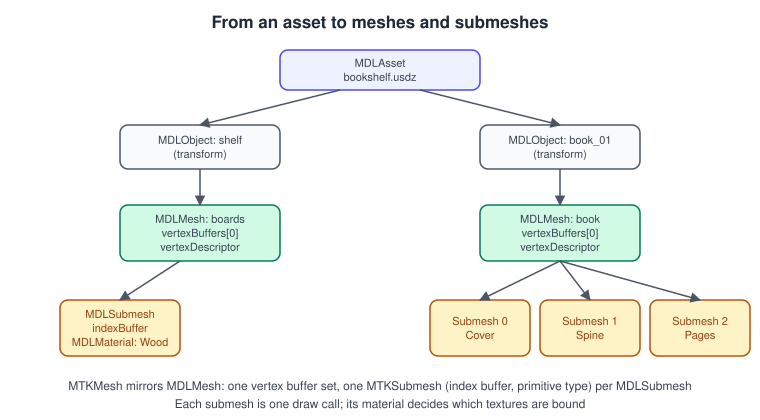
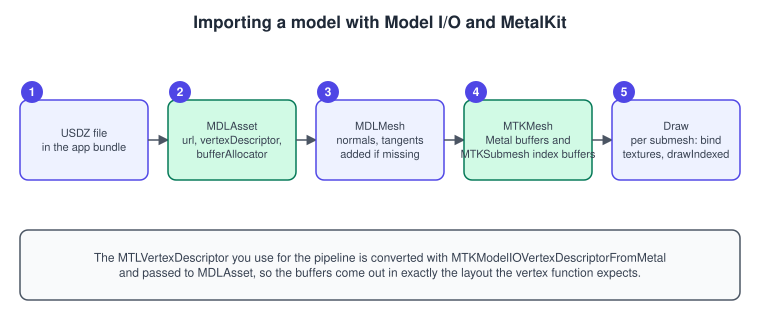
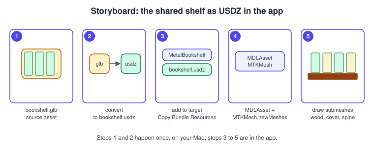

Models with Model I/O and USD
|
This content was generated with the assistance of AI and should be verified against the official documentation before being relied on in production. |
Hand-written vertex arrays are fine for a triangle and a quad; a bookshelf is a file made in a modelling tool. Apple’s answer for reading such files in a Metal app is Model I/O, a framework that imports and exports 3D assets, describes meshes, materials and lights, and bridges to Metal through MetalKit. Its native format is USD (Universal Scene Description), packaged for distribution as USDZ. This page covers the import path from file to draw call, and shows how the shared Bookshelf model reaches a Metal app.
The facts were checked in November 2026. The page documents Model I/O and MetalKit as they are in the 26 and 27 operating systems, with the draw code written for Metal 4 (26 and later) and the Metal 3 API that coexists with it, in Swift for Xcode 27. Model I/O and MetalKit exist on iOS, iPadOS, macOS, tvOS and visionOS (MetalKit mesh types are available from iOS 9 and macOS 10.11). In the Metal Bookshelf running example this is the stage "the shared shelf as USDZ through Model I/O": the hand-made book of Textures and Samplers is replaced by the whole shelf with its books. The general ideas are in Scene Graphs and Asset Formats and Meshes and Vertex Data; the OpenGL counterpart is Asset Loading: glTF and OBJ.
The class map

| Type | Framework | What it holds |
|---|---|---|
|
Model I/O |
A file’s contents: a tree of |
|
Model I/O |
A node with a |
|
Model I/O |
Vertex buffers ( |
|
Model I/O |
An index buffer, a geometry type (triangles, lines) and an |
|
Model I/O |
Named properties ( |
|
MetalKit |
The same meshes as |
|
MetalKit |
Makes Model I/O allocate its buffers directly as Metal buffers, so no second copy is needed. |
Model I/O objects live in system memory and are independent of any GPU; MetalKit mesh objects own Metal buffers. You normally
import with Model I/O, adjust there (normals, tangents, layout), and then create MTKMesh objects once.
The import flow

-
Build the
MTLVertexDescriptoryour pipeline uses (see Buffers and Vertex Descriptors). -
Convert it with
MTKModelIOVertexDescriptorFromMetal(_:)and name its attributes, because Model I/O matches attributes by name. -
Create the
MDLAssetwith that descriptor and aMTKMeshBufferAllocator. -
For each
MDLMesh, add normals and tangents if the file lacks them. -
Create
MTKMeshobjects and load the material textures. -
Draw every submesh with its material.
import MetalKit
import ModelIO
struct Submesh {
let mtk: MTKSubmesh
let baseColor: MTLTexture?
let roughness: Float
let metallic: Float
}
struct Model {
let mesh: MTKMesh
let submeshes: [Submesh]
let transform: float4x4 // from the asset's node
}
func makeModelVertexDescriptor(from metal: MTLVertexDescriptor) -> MDLVertexDescriptor {
// Partially converted: formats, offsets, buffer indices and strides come across; names do not.
let d = MTKModelIOVertexDescriptorFromMetal(metal)
(d.attributes[0] as! MDLVertexAttribute).name = MDLVertexAttributePosition
(d.attributes[1] as! MDLVertexAttribute).name = MDLVertexAttributeNormal
(d.attributes[2] as! MDLVertexAttribute).name = MDLVertexAttributeTextureCoordinate
return d
}
func loadModels(url: URL, device: MTLDevice, vertexDescriptor metalDescriptor: MTLVertexDescriptor) throws -> [Model] {
let allocator = MTKMeshBufferAllocator(device: device)
let modelIODescriptor = makeModelVertexDescriptor(from: metalDescriptor)
let asset = MDLAsset(url: url, vertexDescriptor: modelIODescriptor, bufferAllocator: allocator)
asset.loadTextures() // decode the textures referenced by the materials
let loader = MTKTextureLoader(device: device)
var models: [Model] = []
for object in asset.childObjects(of: MDLMesh.self) {
guard let mdlMesh = object as? MDLMesh else { continue }
// Files without normals get smooth ones; creaseThreshold is in radians (0 = hard edges everywhere).
if mdlMesh.vertexAttributeData(forAttributeNamed: MDLVertexAttributeNormal) == nil {
mdlMesh.addNormals(withAttributeNamed: MDLVertexAttributeNormal, creaseThreshold: 0.5)
}
mdlMesh.vertexDescriptor = modelIODescriptor // force the layout the pipeline expects
let mtkMesh = try MTKMesh(mesh: mdlMesh, device: device)
var submeshes: [Submesh] = []
for (index, mdlSubmesh) in (mdlMesh.submeshes as? [MDLSubmesh] ?? []).enumerated() {
let material = mdlSubmesh.material
let color = material?.property(with: .baseColor)
var texture: MTLTexture?
if color?.type == .texture, let mdlTexture = color?.textureSamplerValue?.texture {
texture = try? loader.newTexture(texture: mdlTexture, options: [.SRGB: true, .generateMipmaps: true])
}
submeshes.append(Submesh(mtk: mtkMesh.submeshes[index],
baseColor: texture,
roughness: material?.property(with: .roughness)?.floatValue ?? 0.6,
metallic: material?.property(with: .metallic)?.floatValue ?? 0))
}
let world = MDLTransform.globalTransform(with: mdlMesh, atTime: 0)
models.append(Model(mesh: mtkMesh, submeshes: submeshes, transform: world))
}
return models
}Source: MTKMesh
Points worth knowing:
-
MTKModelIOVertexDescriptorFromMetalconverts only part of the descriptor, so the attribute names are yours to set. If they are missing, Model I/O does not know which data goes to which attribute, and you get an empty or wrong layout. -
MDLAsset.canImportFileExtension(_:)tells you at run time whether Model I/O can read a given extension on this OS, andcanExportFileExtension(_:)whether it can write one. Test it rather than assuming. -
addNormals(withAttributeNamed:creaseThreshold:)splits vertices where faces meet at an angle sharper than the threshold (the edge stays hard);addTangentBasis(forTextureCoordinateAttributeNamed:normalAttributeNamed:tangentAttributeNamed:)generates the tangents that normal mapping needs, see PBR Materials. -
MTKMesh.newMeshes(asset:device:)is the one-call alternative: it returns both the Model I/O and the MetalKit meshes of an asset. Use it when you do not need to edit the meshes first. -
Creating
MTKMeshobjects is synchronous and copies or wraps buffers; do it on a loading queue, not in the render loop.
Drawing meshes and submeshes
A submesh is the unit of drawing: it has its own index buffer and its own material, while all submeshes of a mesh share the vertex buffers. For a 3-material book (cover, spine and pages), the mesh is three draws.
Metal 3:
func draw(models: [Model], encoder: MTLRenderCommandEncoder, viewProjection: float4x4, sampler: MTLSamplerState) {
for model in models {
var uniforms = FrameUniforms(model: model.transform,
viewProjection: viewProjection,
normalMatrix: model.transform.normalMatrix)
encoder.setVertexBytes(&uniforms, length: MemoryLayout<FrameUniforms>.stride, index: 1)
for (i, vb) in model.mesh.vertexBuffers.enumerated() {
encoder.setVertexBuffer(vb.buffer, offset: vb.offset, index: i)
}
encoder.setFragmentSamplerState(sampler, index: 0)
for sub in model.submeshes {
encoder.setFragmentTexture(sub.baseColor, index: 0)
let ib = sub.mtk.indexBuffer
encoder.drawIndexedPrimitives(type: sub.mtk.primitiveType,
indexCount: sub.mtk.indexCount,
indexType: sub.mtk.indexType,
indexBuffer: ib.buffer,
indexBufferOffset: ib.offset)
}
}
}Source: MTKSubmesh
Metal 4 replaces the setters with addresses in an argument table:
func drawMetal4(models: [Model], encoder: MTL4RenderCommandEncoder, table: MTL4ArgumentTable,
viewProjection: float4x4, sampler: MTLSamplerState, uniformAddress: (Model) -> MTLGPUAddress) {
table.setSamplerState(sampler.gpuResourceID, index: 0)
for model in models {
for (i, vb) in model.mesh.vertexBuffers.enumerated() {
table.setAddress(vb.buffer.gpuAddress + UInt64(vb.offset), index: i)
}
table.setAddress(uniformAddress(model), index: 8) // must equal the shader's [[buffer(8)]] and fit maxBufferBindCount
for sub in model.submeshes {
if let texture = sub.baseColor { table.setTexture(texture.gpuResourceID, index: 0) }
encoder.setArgumentTable(table, stages: [.vertex, .fragment])
let ib = sub.mtk.indexBuffer
encoder.drawIndexedPrimitives(primitiveType: sub.mtk.primitiveType,
indexCount: sub.mtk.indexCount,
indexType: sub.mtk.indexType,
indexBuffer: ib.buffer.gpuAddress + UInt64(ib.offset),
indexBufferLength: ib.length)
}
}
}Source: MTL4RenderCommandEncoder
All mesh buffers and textures must be in a residency set that is attached to the queue or the command buffer, or the GPU faults. The loading code is the right place to add them. Sorting draws by material (to bind each texture once) and merging meshes that share a pipeline lowers the count; drawing many copies of one mesh, such as the nine books on the shelf, is the subject of the instancing step in GPU-Driven Rendering and Indirect Command Buffers.
Procedural meshes
Model I/O also generates shapes, which is useful for tests, placeholders and gizmos:
import MetalKit
func makeBox(device: MTLDevice, descriptor: MDLVertexDescriptor) throws -> MTKMesh {
let allocator = MTKMeshBufferAllocator(device: device)
let mdlMesh = MDLMesh.newBox(withDimensions: SIMD3<Float>(0.2, 0.3, 0.05),
segments: SIMD3<UInt32>(1, 1, 1),
geometryType: .triangles,
inwardNormals: false,
allocator: allocator)
mdlMesh.vertexDescriptor = descriptor
return try MTKMesh(mesh: mdlMesh, device: device)
}Source: MDLMesh
MDLMesh has similar generators for spheres, ellipsoids, cylinders, capsules, cones, planes and icosahedra. A 0.2 x 0.3 x 0.05 box
is exactly the proportions of a book, so it makes a good stand-in before the real model loads.
USD and USDZ
USD (Universal Scene Description, the OpenUSD project) describes a scene as layers of prims (primitives): transforms
(Xform), meshes (Mesh), materials (Material with a UsdPreviewSurface shader), cameras and lights, with properties,
references and variants. It comes as text (.usda), binary (.usdc) or a mix (.usd). USDZ is a single, uncompressed,
unencrypted zip archive that carries a USD file and its textures, so the model and its images travel as one file. It is the
format of Apple’s AR Quick Look and the asset format of RealityKit and visionOS, which makes it the natural interchange format on
Apple platforms (Apple’s Reality Composer Pro prepares USD content for visionOS and iOS apps); see visionOS and Augmented Reality on Apple Platforms.
Things to check in a USD file you did not make:
| Item | Why it matters |
|---|---|
|
|
|
Scale. A file in centimetres appears 100 times too large in a metre-based scene. |
Material model |
|
Winding and handedness |
Check the front face; see |
Textures |
Packed inside the USDZ; |
The shared shelf as USDZ

The site ships one original model for every section: bookshelf.glb, a glTF 2.0 binary with a shelf of six boards (material Wood) and nine books that share one mesh with three materials (Cover, Spine, Pages), with its textures embedded. glTF is not the native format of Model I/O, so the Metal track converts it to USDZ first, in these steps.
-
Convert once, on your Mac. Open the file in a modelling tool that reads glTF and writes USD, such as Blender (import the
.glb, then export with a.usdzextension and keep the materials and textures option on), or any other tool of your choice that writes USDZ. The material names and texture links must survive; check them in the result with Quick Look (select the file in Finder and press the space bar) and by listing the materials in code as shown below. Keep the converted file with your project, and check itsupAxisandmetersPerUnitas explained above. -
Add it to the app target so it is copied into the bundle, then load it with the code above and the vertex descriptor of the pipeline.
-
Check that Model I/O can read it on your target.
MDLAsset.canImportFileExtension("usdz")is true on the Apple platforms that ship Model I/O; test other extensions (such asglb) in the same way before relying on direct import, and fall back to the converted file if the answer is false. -
Draw. For each node that holds a mesh, use its world matrix as the model matrix and draw every submesh. The nine books share one mesh, so a file that keeps them as references loads that mesh once and shows it nine times with nine transforms.
A short helper confirms what arrived; the output should list Wood, Cover, Spine and Pages:
func describe(asset: MDLAsset) {
for mesh in asset.childObjects(of: MDLMesh.self).compactMap({ $0 as? MDLMesh }) {
print("mesh \(mesh.name): \(mesh.vertexCount) vertices")
for sub in (mesh.submeshes as? [MDLSubmesh]) ?? [] {
print(" submesh: \(sub.indexCount) indices, material \(sub.material?.name ?? "none")")
}
}
}Source: MDLAsset
If a mesh arrives without its textures, check the material’s property types: a baseColor that is a constant colour (type
.float3 or .color) means the converter wrote a colour instead of a texture reference. The textures themselves are also
available as the PNG files bookshelf-wood.png, bookshelf-cover.png, bookshelf-spine.png and bookshelf-pages.png that ship
with the site, so you can load them by hand with MTKTextureLoader, as in the textures page, and assign them per material name.
Common mistakes
-
Attribute names missing from the converted vertex descriptor, so Model I/O produces an empty layout.
-
A vertex descriptor for the pipeline that differs from the one given to Model I/O (stride, offsets or formats): the model looks like noise.
-
Drawing a mesh once instead of once per submesh, so only the first material appears.
-
Using the node’s local transform instead of its world transform: children appear at the origin.
-
Loading synchronously in the render loop, which hitches the frame.
-
Normals missing: lighting looks flat or black. Add them with
addNormals. -
Metal 4: forgetting to put the new buffers and textures into a residency set.
Performance notes
-
Import once, at load time; keep only the Metal objects. For shipping, bake the result to your own binary format so that start-up skips parsing.
-
One vertex buffer and one index buffer per mesh, with
uint16indices when the vertex count allows. -
Merge submeshes that share a material, and sort draws by pipeline and material.
-
Use compressed vertex formats (see the buffers page) and ASTC textures (see the textures page) for shipped assets.
-
For large scenes, move to GPU-driven rendering and meshlets: Mesh Shaders.
What changed and where the books are outdated
| Topic | Older teaching | Now |
|---|---|---|
Model I/O |
Metal by Tutorials (MBT) ch. 2 and Metal Programming Guide (CLA) ch. 11 cover loading models with Model I/O. |
The classes are the same; USD and USDZ are the primary formats, and formats are tested at run time with |
Buffer binding |
|
Still valid in Metal 3; Metal 4 binds GPU addresses and requires residency sets. |
Library creation |
|
|
Scene model |
Loading only the meshes drops the node hierarchy. |
Keep the node transforms ( |
Higher-level frameworks |
Metal is the low-level path for everything. |
RealityKit is Apple’s current high-level 3D framework; see SwiftUI Shaders and RealityKit Interop. |
See also
-
PBR Materials: using roughness, metallic and normal maps from the material.
-
Resource Loading and Streaming: loading large assets without hitches.
-
Hello Triangle with Metal 4: the frame structure the draw code lives in.
References
-
Model I/O: https://developer.apple.com/documentation/modelio
-
MDLAsset: https://developer.apple.com/documentation/modelio/mdlasset
-
MDLMesh: https://developer.apple.com/documentation/modelio/mdlmesh
-
MTKMesh: https://developer.apple.com/documentation/metalkit/mtkmesh
-
MTKSubmesh: https://developer.apple.com/documentation/metalkit/mtksubmesh
-
MTKModelIOVertexDescriptorFromMetal: https://developer.apple.com/documentation/metalkit/mtkmodeliovertexdescriptorfrommetal(_:)
-
MTKTextureLoader: https://developer.apple.com/documentation/metalkit/mtktextureloader
-
Reality Composer Pro: https://developer.apple.com/documentation/realitycomposerpro/
-
Universal Scene Description (OpenUSD): https://openusd.org/
-
Metal by Tutorials (publisher page): https://www.kodeco.com/books/metal-by-tutorials
-
Metal Programming Guide (publisher page): https://www.informit.com/store/metal-programming-guide-tutorial-and-reference-via-9780134668949